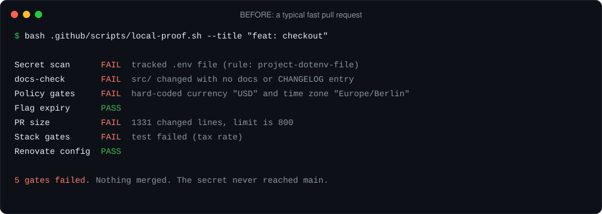

Guardrails for fast code, and for code written by AI.
One command adds a short rules file and real, automated gates to any repository. Every pull request carries proof that the checks passed, on GitHub Actions or on your laptop.
Install in 60 seconds
git clone https://github.com/mohamad-tn/engineering-rules.git
bash skills/engineering-rules/scripts/install.sh --target ./my-project
bash .github/scripts/doctor.sh
bash .github/scripts/local-proof.shThe problem
Writing code has never been faster. Reviewing it has not. These failures slip through:
Committed secrets
A .env file or key in git history turns rotation into an incident.
Configuration in code
Currency, time zones and hosts typed into code need a release for every new market.
Giant pull requests
1,300 changed lines are not reviewed; bugs ride along.
Docs that lie
Code changes, documentation and changelog do not.
Unreproducible builds
No lockfile, beta dependencies, builds that differ between machines.
Green that means nothing
Skipped tests and gates that quietly did not run.
How it works
1Install
Detects your stack and never overwrites a file.
bash skills/engineering-rules/scripts/install.sh --target ./my-project2Work in small tasks
About one pull request per task, around 400 changed lines.
3Prove it
Runs every gate and prints a block you paste into the pull request.
bash .github/scripts/local-proof.sh4A human merges
Assistants never merge. A gate that did not run is never a pass.
See it work
The same feature, first as a fast pull request, then done to the rules. This is the real output of the included demo.


Every stack, auto-detected
Install, format, lint, types, tests, build and audit for each stack, monorepos included.
- Node.js
- Next.js
- React
- React Native
- Vue
- Angular
- Svelte
- NestJS
- .NET
- Laravel
- Symfony
- Flutter
- Python
- Django
- FastAPI
- Java
- Spring Boot
- Go
- Rust
- Ruby
- Rails
- Swift
- C / C++
- Terraform
- Docker
Works with any AI agent
Claude Code, Cursor, Codex, GitHub Copilot, Gemini, Windsurf, or a human reviewer. The rules live in AGENTS.md; the installer adds small bridge files for each tool.
Questions
What is engineering-rules?
A short rules file and a set of real, automated pull-request gates, packaged as an Agent Skill and a one-command installer. It works for any repository and stack.
Do I need paid CI?
No. Every gate is a plain bash or Node script. Run local-proof.sh and paste its output into the pull request, or call the same scripts from GitHub Actions, GitLab, Bitbucket or Jenkins.
Does it work with AI coding assistants?
Yes. Claude Code, Cursor, Codex, Copilot, Gemini and Windsurf read AGENTS.md or its bridge files. An agent can adopt it with one command and read machine-readable results with --json.
Which languages and frameworks are supported?
Node.js, Next.js, React, React Native and Expo, Vue, Angular, Svelte, NestJS, .NET, Laravel and PHP, Flutter, Python and Django, Java and Spring, Go, Rust, Ruby and Rails, Swift, C and C++ with CMake, Terraform and OpenTofu, and Docker.
Can I adopt it in an existing, messy repository?
Yes. Start with the lite profile: old markdown is not linted, old history can be scanned from the adoption commit, and a gate you switch off on purpose leaves the required list.
Is there an Arabic edition?
Yes. A full Arabic edition of the skill, the README and the guides ships in the same repository.